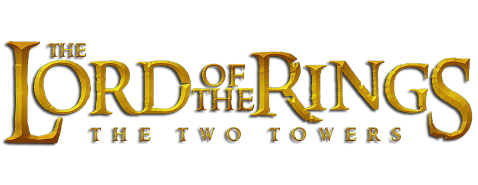

Table of contents for "Two towers"
BOOK THREE
- The Departure of Boromir
- The Riders of Rohan
- The Uruk-hai
- Treebeard
- The White Rider
- The King of the Golden Hall
- Helm's Deep
- The Road to Isengard
- Flotsam and Jetsam
- The Voice of Saruman
- The Palantir
BOOK FOUR
- The Taming of Smiagol
- The Passage of the Marshes
- The Black Gate Is Closed
- Of Herbs and Stewed Rabbit
- The Window on the West
- The Forbidden Pool
- Journey to the Cross-roads
- The Stairs of Cirith Ungol
- Shelob's Lair
- The Choices of Master Samwise
Previous page
Next page